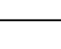
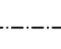

Practice Reading Files and Plotting Data
Contents
Practice Reading Files and Plotting Data#

Author: Dr Antonia Mey and Dr James Cumby
Email: antonia.mey@ed.ac.uk, james.cumby@ed.ac.uk
Question 1#
Read in data from
extra/X_calibration.csvinto a dataframe.Inspect the dataframe you have read in.
Plot the absorbance vs. mass concentration data (in g dm\(^{-3}\)) of a compound X. Write a function that will plot this calibration curve (DataFrame taken as the function argument) as a scatter plot, with axes correctly labelled including units.
# Answer here
Question 2#
The radial part (\(R(r)\)) of the hydrogen wavefunction for the quantum numbers \(n\) and \(l\) is given by the equation $\( R(r) = \frac{2r}{na_0}\sum_{k=0}^{n-l-1} a_k \left( \frac{2r}{na_0} \right)^k \exp \left( {-\frac{r}{na_0}} \right) \)\( where the coefficient \)a_k\( is determined from a recursion relationship, \)\( a_{k+1} = \frac{k+l+1-n}{(k+1)(k+2l+2)}a_k \)\( and \)a_0$ is the Bohr radius.
Generally more useful for visualisation is the atomic radial distribution function $\( \mathrm{RDF} = 4 \pi r^2 R(r)^2 \)\( which readily shows the number of radial nodes for a given combination of \)(n, l)$.
The function atomic_rdf takes as its input the quantum numbers \(n\) and \(l\) and a maximum radius for which to calculate the rdf for (in units of \(a_0\), the Bohr radius) and returns two lists; the first of r distances (in \(a_0\) units) and the second of the calculated RDF at each point.
Write a function that will take an integer \(n\) as input (\(1 \leq n_{\mathrm{max}} \leq 4\)), and produce a plot of the RDFs for \(n = 1, 2 ..., n_\mathrm{max}\) containing the wavefunction with the fewest radial nodes for each \(n\). For example, \(n_{\mathrm{max}} = 3\) would produce a plot of the 1s, 2p and 3d RDFs.
Remember, the number of radial nodes for a given \(n,l\) pair is given by \(n - l - 1\).
Your function should incorporate assert statements to check that the input value is valid, and return the matplotlib axes object. Internally, call the atomic_rdf function to generate the necessary curves. Your plot should extend from \(0 a_0\leq r < 50 a_0\) and should have axes correctly labelled with the quantity plotted and any units.
Your plot should adopt the following formatting:
overall figure should have a width:height ratio of 1.618 (the ‘golden’ ratio)
The colours and line formats should be as follows:
Principal quantum number \(n\)
Line Colour
1
black (‘k’)
2
red (‘r’)
3
Matplotlib C1
4
Matplotlib C2
5
Matplotlib C3
6 - 10
Matplotlib C4 - C8
Angular quantum number \(l\)
Line Style
0 (s)

1 (p)

2 (d)

3 (f)

# Answer here
Question 3#
The file data_sources/V_containing_ICSD.csv contains details of many of the reported crystal structures containing vanadium.
plot_icsd is intended to take a data file with the same format as V_containing_ICSD.csv, and produce a histogram based on the CellVolume column values. In addition, it takes two arguments (groupby_col and group_ranges) which should cause it to create a stacked histogram based on data in another column. For example, if groupby_col = Temperature then plot_icsd should produce a plot where histograms for different temperature ranges are stacked on top of each other. The ranges to use are defined by the group_ranges argument, which is a list containing the temperature divisions. These ranges should be exclusive of the upper value, but inclusive of the lower value, i.e.
group_ranges = [0, 290, 300, 5000] should produce three sets of bars, with the data distributed as:
$\(
0 \leq T < 290 \\
290 \leq T < 300 \\
300 \leq T < 5000 \\
\)$
By way of an example, plot_icsd('data_sources/V_containing_ICSD.csv', 'Temperature', [0, 290, 300, 5000]) should produce a plot similar to the following:

Points to note#
If
groupby_col == ''orgroup_rangesis an empty list,plot_icsdshould return a simple (non-stacked) histogramYou should use 50 histogram bins distributed across the full range of the CellVolume values.
Hint: to generate an certain number of bins across a range, use
np.linspace(start, end, number_of_bins+1)(remember that computing a histogram requires both left and right edges of each bin, but plotting only requires the left edge)The width of the plotted bins should be the correct size for the data
Hint:
np.linspacecan also return the step size if asked…Remember to stack the bars, and not just plot them starting from zero.
Remember to add a legend and meaningful axis labels, based on the data received.